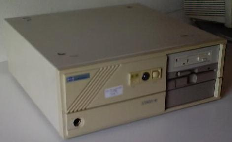

I can't remember how I acquired it.
I found a 80287 Coprocessor somewhere, and I plugged it in. The Coprocessor was an "Intel D80287-10, L9501558", and it got really really hot while using the computer. It used to hang, then I decided to plug it out. It isn't good running a 10MHz copro with a 12MHz CPU.
Supports two floppies and two MFM HDs.
| Address | UART | Speed | Format | IRQ | |
|---|---|---|---|---|---|
| COM1 | 03F8 | 16450 | 2400 | 8N1 | 4 |
| COM2 | 02F8 | 16450 | 2400 | 8N1 | 3 |
| Address | IRQ | |
|---|---|---|
| LPT1 | 0378 | |
| LPT2 | 0278 | 7 |
| Voltage | Current | |
|---|---|---|
| INPUT | 200-240V AC | 2.4A |
| INPUT | 100-120V AC | 5.0A |
| OUTPUT | +5V DC | 19.0A |
| OUTPUT | -5V DC | 0.3A |
| OUTPUT | +12V DC | 3.8A |
| OUTPUT | -12V DC | 0.3A |
This information is hold inside the computer. A scan of the paper may be of more help. E-mail me if you think you need a scanned copy.
| Jumper Selection | SW1 | JP1 | |||||||||
|---|---|---|---|---|---|---|---|---|---|---|---|
| 1 | 2 | 3 | 4 | 5 | 6 | 7 | 8 | H | N | ||
| RAM SIZE | 512K | Y | Y | Y | |||||||
| 640K | N | Y | Y | ||||||||
| 512+512K | Y | N | Y | ||||||||
| 640+384K | N | N | Y | ||||||||
| 2M | Y | Y | N | ||||||||
| 1M+640K | N | Y | N | ||||||||
| 4M | Y | N | N | ||||||||
| 3M+640K | N | N | N | ||||||||
| EPROM TYPE | 27128 | Y | N | N | Y | ||||||
| 27256 | Y | N | Y | N | |||||||
| 27512 | N | Y | Y | N | |||||||
| DISPLAY TYPE | COLOR | Y | |||||||||
| MONOCHROME | N | ||||||||||
| SYSTEM SPEED | HIGH | H | |||||||||
| NORMAL | N | ||||||||||
For a succesful interpretation of the Y-N values in SW1: Jumpers 1,4,5,6,7,8 have ON position (Y) to the left, and 2 and 3 to the right
Keys for entering CMOS Configuration: CONTROL-ALT-ESC
These files can give more detailed information about the computer and its configuration, and also some benchmarking.
The guy who put the 3.5" Floppy Drive in the computer, hadn't a small power connector for it. Then he cut a power cable with big and small connectors, and he simply plugged the cut cables into the computer's big power supply connector. Sometimes these get unplugged, and then the floppy drives don't work.
In its name, Fujitsu SENDA-16C, the C stands for "COMPACT".
This could be a very good computer, but its limitation to 512Kb base memory is a pitty.
Started 04/08/2001 / Updated 2002-03-16 23:18:11.000000000 +0100
[top] [home] [Software utilities]
Viric's Web Site / Webmaster: viric / Started 03/08/2001 / Updated mié sep 17 01:30:41 CEST 2003{kind=link}
{kind=link}